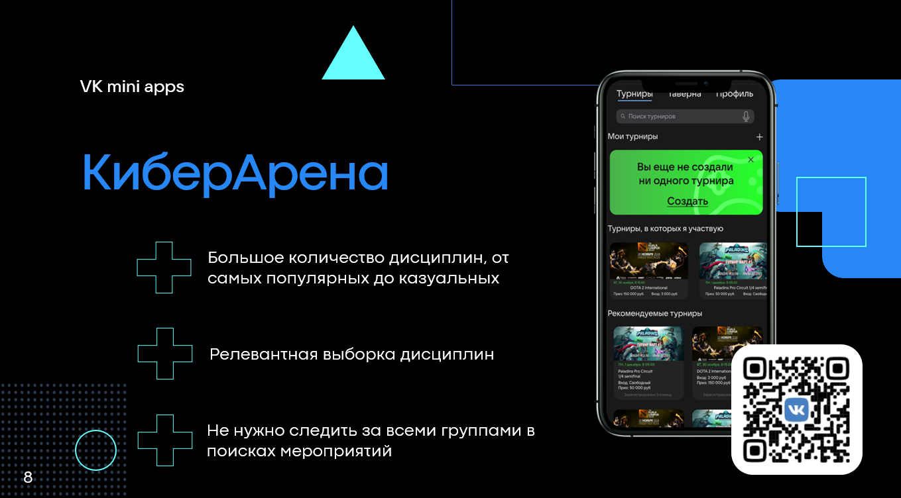

ПОРТФОЛИО
ГРАФИЧЕСКИЙ И ПРОДУКТОВЫЙ ДИЗАЙН
|
|
ПОРТФОЛИОГРАФИЧЕСКИЙ И ПРОДУКТОВЫЙ ДИЗАЙН |
|
| ОБО МНЕ | ПРОЕКТЫ | КОНТАКТЫ | ЗАКАЗАТЬ РАБОТУ |
|
Киберспортивное приложение для поиска напарников В рамках Хакатона Цифровой прорыв 2020 (финал) был разработан дизайн и видение продукта для внедрения в вертикаль Киберспорт VK mini apps. Приложение представляет собой сервис по организации киберспортивных соревнований различного масштаба, поиска команд и напарников для игр. В качестве основной особенности приложения выступает система монетизации и обмена на товары для геймеров. Чат-бот для ответов на вопросы В рамках Хакатона Банка Открытие Open Space Hack (2020) был разработан чат-бот для поиска ответов на вопросы для сотрудников КЦ. Telegram чат-бот OPhelia отвечает более чем на 800 заготовленных вопросов об услугах банка. С помощью передовых алгоритмов анализа текста, время на поиск нужных ответов улучшился в 2 раза. Дизайн афиши для музыкального мероприятия 
В рамках курса Дизайна была разработана афиша для музыкального мероприятия Music-On. Стилистика мероприятия: "вечерний ламповый концерт". Исходя из этого, была предложена соответсвующая цветовая гамма, а атрибуты вечера, использовались для создания окружения и самого логотипа. Сервис по поиску стажировок для Росатома 
В рамках Хакатона Цифровой прорыв 2021 был разработан сервис по поиску сотрудников для крупных корпораций и поиска стажировок для студентов. Приложение представляет возможность проведения всех этапов отбора кандидатов на заранее созданные вакансии. Особенность решения - близкая по духу поколению Z и Y система свайпов (прим. Tinder) карточек стажировок, сохранение их в личном кабинете для последующей обработки и общения с работодателем. |